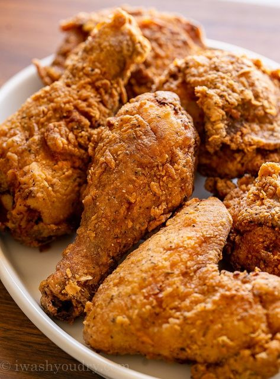
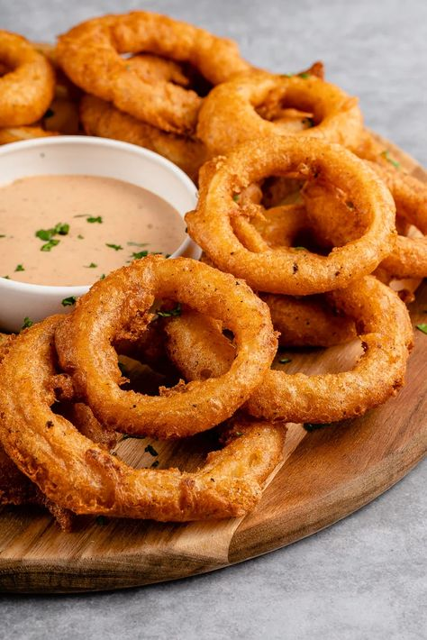
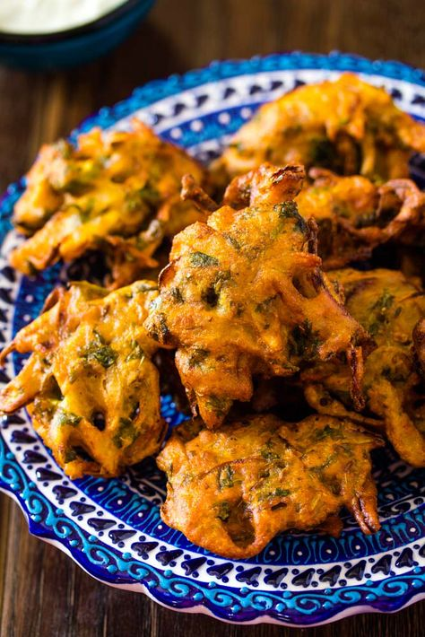
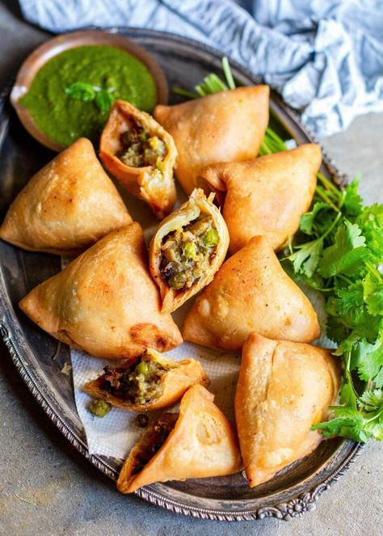
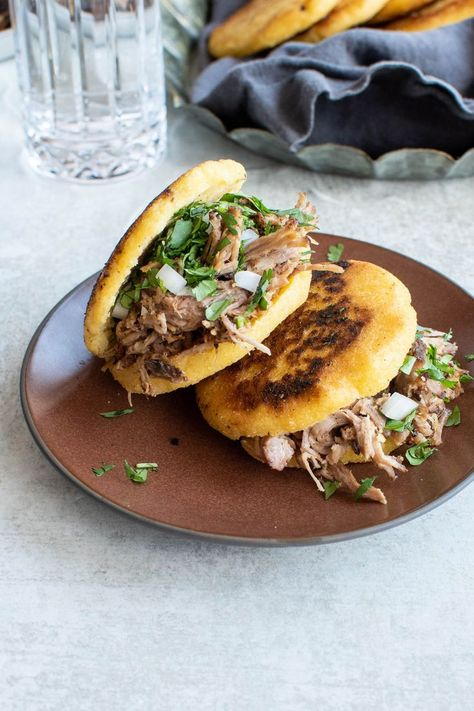
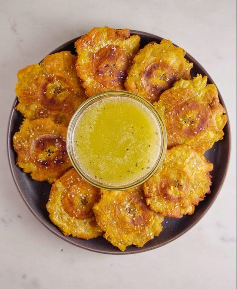
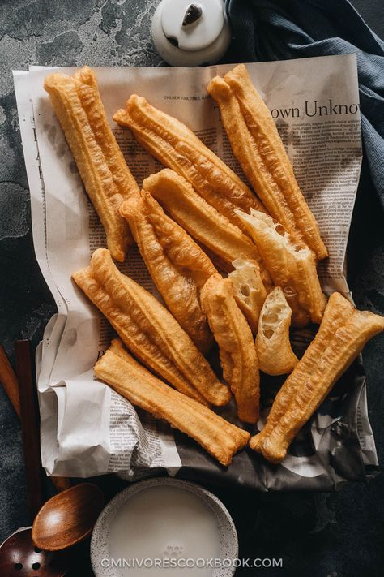
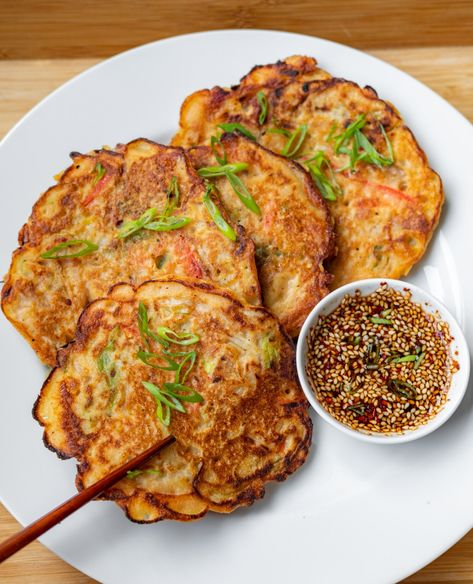

1. Resep Tempura
Bahan:
- 3 sdm tepung beras
- 1 sdm tepung terigu
- 4 sdm telur kocok
- 1/4 sdt garam
- 1/4 sdt lada bubuk
- Air es secukupnya
- Bahan utama (udang, brokoli, wortel, bayam)
Cara Membuat:
- Campurkan tepung beras, tepung terigu, telur, garam, dan lada bubuk dalam mangkuk.
- Tambahkan air es sedikit demi sedikit hingga adonan tercampur rata.
- Celupkan bahan utama (udang, brokoli, wortel, bayam) ke dalam adonan.
- Panaskan minyak dalam wajan, goreng bahan utama hingga keemasan.
- Tiriskan dan sajikan dengan saus sambal atau saus manis.
2. Resep Spring Rolls
Bahan:
- 10 lembar kulit lumpia
- 1 cangkir sayuran (kol, wortel, taoge)
- 100 gram daging ayam atau udang (opsional)
- Minyak untuk menggoreng
Cara Membuat:
- Tumis sayuran dan daging hingga matang.
- Ambil selembar kulit lumpia, letakkan 1-2 sendok makan isian, lipat dan gulung.
- Panaskan minyak, goreng spring rolls hingga keemasan.
- Sajikan dengan saus sambal atau saus manis.
3. Resep Fried Chicken

Bahan:
- 500 gram ayam, potong sesuai selera
- 1 cangkir tepung terigu
- 1 butir telur
- 1 cangkir susu
- Garam dan merica secukupnya
- Minyak untuk menggoreng
Cara Membuat:
- Campurkan tepung terigu, garam, dan merica dalam mangkuk.
- Kocok telur dan campurkan dengan susu dalam mangkuk terpisah.
- Celupkan potongan ayam ke dalam campuran telur, lalu gulingkan di tepung.
- Panaskan minyak dan goreng ayam hingga matang dan keemasan.
- Tiriskan sebelum disajikan.
4. Resep Onion Rings

Bahan:
- 2 buah bawang bombay, iris tebal
- 1 cangkir tepung terigu
- 1/2 cangkir susu
- 1 butir telur
- Garam dan merica secukupnya
- Minyak untuk menggoreng
Cara Membuat:
- Campurkan tepung, garam, dan merica dalam mangkuk.
- Kocok telur dan campurkan dengan susu.
- Celupkan irisan bawang ke dalam campuran telur, lalu gulingkan di tepung.
- Panaskan minyak dan goreng hingga keemasan.
- 5. Tiriskan dan sajikan.
5. Resep Pakora

Bahan:
- 1 cangkir tepung chickpea (besan)
- 1/2 cangkir air
- Sayuran (kentang, bayam, atau kembang kol)
- Rempah-rempah (jinten, garam)
- Minyak untuk menggoreng
Cara Membuat:
- Campurkan tepung chickpea, air, dan rempah-rempah menjadi adonan kental.
- Tambahkan sayuran ke dalam adonan.
- Panaskan minyak, ambil sesendok adonan dan goreng hingga keemasan.
- Tiriskan dan sajikan.
6. Resep Samosa

Bahan:
- 2 cangkir tepung terigu
- 2-3 kentang, rebus dan haluskan
- Bumbu (garam, merica, jintan)
- Minyak untuk menggoreng
Cara Membuat:
- Campurkan tepung terigu dengan sedikit air hingga kalis.
- Campurkan kentang halus dengan bumbu.
- Ambil sejumput adonan, pipihkan, dan isi dengan campuran kentang.
- Bentuk segitiga dan goreng hingga keemasan.
- Sajikan dengan saus chutney.
7. Resep Arepas

Bahan:
- 2 cangkir tepung jagung (masa harina)
- 2 cangkir air
- Garam secukupnya
- Minyak untuk menggoreng
Cara Membuat:
- Campurkan tepung jagung, air, dan garam hingga membentuk adonan.
- Bentuk adonan menjadi bulatan pipih.
- Panaskan minyak di wajan, goreng arepas hingga keemasan di kedua sisi.
- Sajikan dengan isian sesuai selera (keju, daging, atau sayuran).
r
8. Resep Tostones

Bahan:
- 2 buah pisang hijau
- Minyak untuk menggoreng
- Garam secukupnya
Cara Membuat:
- Kupas pisang dan potong menjadi irisan tebal.
- Goreng irisan pisang dalam minyak panas hingga setengah matang.
- Angkat dan pipihkan dengan alat datar.
- Goreng kembali hingga keemasan dan renyah, taburi garam.
- Sajikan dengan saus celup.
9. Resep You Tiao

Bahan:
- 2 cangkir tepung terigu
- 1/2 cangkir air
- 1 sdt baking powder
- 1 sdt garam
- Minyak untuk menggoreng
Cara Membuat:
- Campurkan tepung, baking powder, dan garam, lalu tambahkan air sedikit-sedikit hingga adonan kalis.
- Diamkan selama 30 menit.
- Bentuk adonan menjadi batang panjang, goreng dalam minyak panas hingga keemasan.
- Sajikan hangat.
10. Resep Bindaetteok

Bahan:
- 1 cangkir tepung kacang hijau
- 1 cangkir air
- Sayuran (bawang daun, wortel)
- Minyak untuk menggoreng
Cara Membuat:
- Campurkan tepung kacang hijau dengan air hingga membentuk adonan kental.
- Tambahkan sayuran yang telah dicincang halus.
- Panaskan minyak, tuangkan adonan ke dalam wajan dan ratakan.
- Goreng hingga kedua sisi keemasan.
- Sajikan dengan saus atau sambal.